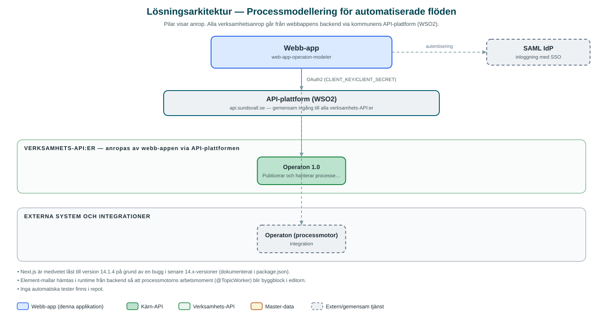

Processmodellering för automatiserade flöden
Webbaserat ritverktyg där utvecklare skapar och publicerar BPMN-processer och DMN-beslut till kommunens processmotor.
Om applikationen
Verktyget är en webbapplikation för att rita processdiagram (BPMN) och beslutsmodeller (DMN) och publicera dem direkt till kommunens processmotor Operaton, som driver automatiserade ärendeflöden.
Editorn bygger på etablerade modelleringsverktyg och kompletteras med byggblock som hämtas i realtid från processmotorn, så att tillgängliga automatiska arbetsmoment visas som färdiga drag-och-släpp-komponenter.
Användare loggar in med kommunens gemensamma inloggning, och verktyget kan även hantera driftsättningar, till exempel att ta bort tidigare publicerade processer. Detta är ett internt utvecklingsverktyg, inte en tjänst för invånare eller allmän verksamhet.
Det här stödjer applikationen
- BPMN-modellering – Rita processdiagram med egenskapspanel och Camunda-kompatibla inställningar.
- DMN-modellering – Skapa beslutsmodeller och beslutstabeller.
- Färdiga byggblock – Automatiska arbetsmoment i processmotorn hämtas i realtid och visas som drag-och-släpp-komponenter.
- Publicering till processmotorn – Modeller driftsätts direkt till processmotorn Operaton via kommunens API.
- Hantering av driftsättningar – Tidigare publicerade processer kan listas och tas bort.
Teknisk dokumentation
Nedan beskrivs hur applikationen är uppbyggd, vilka API:er den använder och vad som krävs för att driftsätta den. Informationen är härledd ur källkoden och dess konfiguration på GitHub.
Arkitektur

Applikationen består av en webbaserad frontend (Next.js 14, React, bpmn-js/dmn-js med Camunda properties-panel, Tailwind CSS) och en backend (Node.js, Express, TypeScript (BFF med OAuth2 client credentials)) som utvecklas i samma kodbas. Verksamhetsanrop går via kommunens gemensamma API-plattform (WSO2) – frontend pratar aldrig direkt med underliggande system. Inloggning: SAML (SSO). Övriga integrationer som förekommer i koden: Operaton (processmotor), SAML IdP, WSO2 API-gateway.
Teknikstack
- Frontend: Next.js 14, React, bpmn-js/dmn-js med Camunda properties-panel, Tailwind CSS
- Backend: Node.js, Express, TypeScript (BFF med OAuth2 client credentials)
API-beroenden
Applikationen konsumerar följande API:er via kommunens API-plattform. Versionerna är hämtade ur källkodens API-konfiguration.
| API | Version | Användning |
|---|---|---|
| Operaton | 1.0 | Publicerar och hanterar processer och beslut i processmotorn (via OAuth2-klientuppgifter mot API-gatewayn). |
Konfiguration och driftsättning
- Backend: .env.example.local med CLIENT_KEY/CLIENT_SECRET (OAuth2) och API_BASE_URL mot processmotorns API
- SAML-inställningar för användarinloggning via BFF
- MUNICIPALITY_ID styr vilken kommun anropen gäller
- Frontend: .env-example kopieras till .env
Noterbart ur källkoden
- Next.js är medvetet låst till version 14.1.4 på grund av en bugg i senare 14.x-versioner (dokumenterat i package.json).
- Element-mallar hämtas i runtime från backend så att processmotorns arbetsmoment (@TopicWorker) blir byggblock i editorn.
- Inga automatiska tester finns i repot.
Källkod
Källkoden är öppen och finns hos Sundsvalls kommun på GitHub. I källkodsförrådet finns även instruktioner för att klona, konfigurera och starta applikationen i egen miljö.